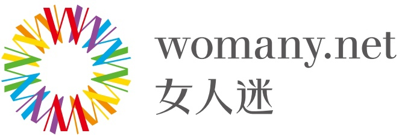

Profile
Work Experiences
Education
Websites
School Projects
Design Work
Graphical Work
-
Yahoo! Inc. 2014-Present
-
Software Engineer
-
Experiences in web front-end and basic iOS app development.
-
Experiences in testing, continues integration (CI), and continues deployment (CD) to enhance code quality.
-
Familiarity with ReactJS and Flux web development.
-

Womany Aug 2013 - Oct 2013
-
Web front-end Internship
-
Experiences in web front-end development and design.
-
National Taiwan University 2012-2014
-
Master of Science
-
The Department of Electrical Engineering College
-
Rearsh field: Genetic Algorithms and Information Retrieval
-
Publication: Design of Test Functions for Discrete Estimation of Distribution Algorithms. Proceedings of the Genetic and Evolutionary Computation Conference(GECCO-2013), 2013
- Thesis: User Preference Based Recommendation System Design with Adaptive Concept Space
-
GPA 4.1/4.3
-
National Taiwan University 2008-2012
-
Bachelor of Science in Engineering
-
GPA 3.39/4.00
 National Taiwan University 2012-2014
National Taiwan University 2012-2014